以下のURLにアクセスをして、コントロールパネルへログインします。
配布されたIDとPasswordを入力する
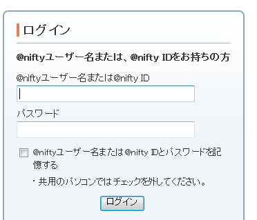SSHのキー作成を行う。
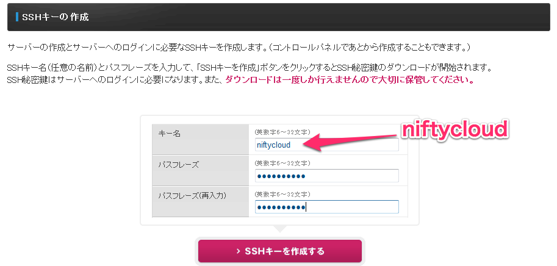キーのダウンロードが行われるので、どこに保存されているか確認しておくこと。
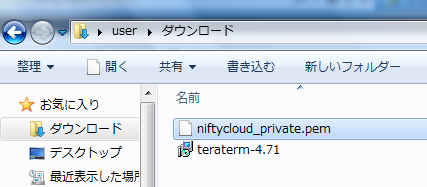今回はRailsの動作確認で使うサーバのために、独自の設定を行います。 そのため、Firewallは有償プランにて行って頂きます。
ファイアーウォールのメニューに入る
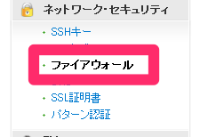有償プランへ変更する
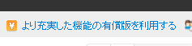 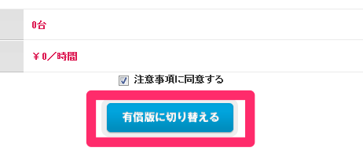サーバ作成画面へ
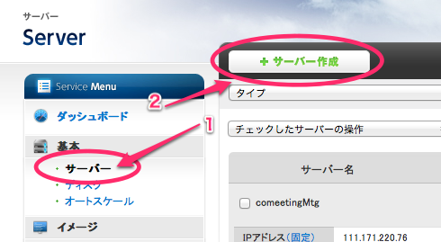CentOS 5.6 Plainを選択する
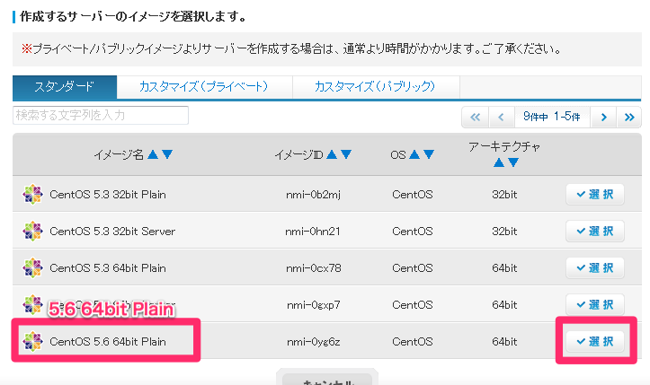サーバ名を入力
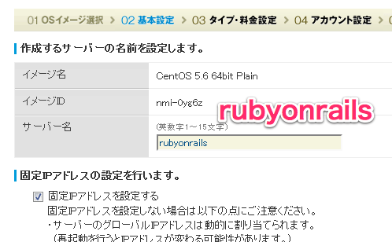miniを選択する
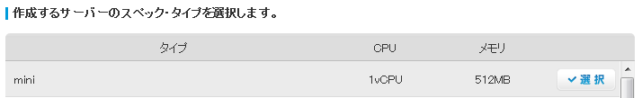料金は従量を選択する
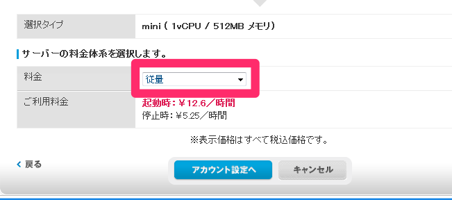sshキーを選ぶ
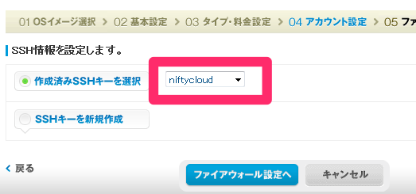Firewallの設定を行います
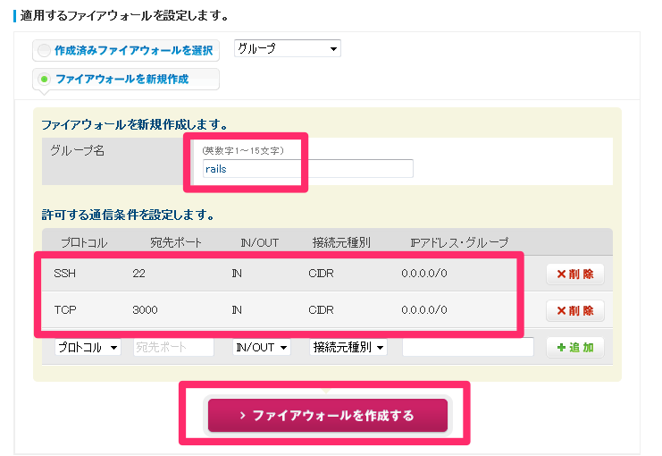 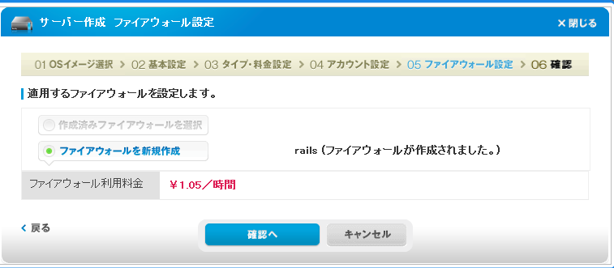最後に確認し、作成する。
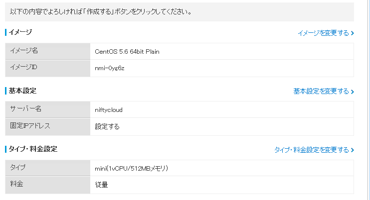 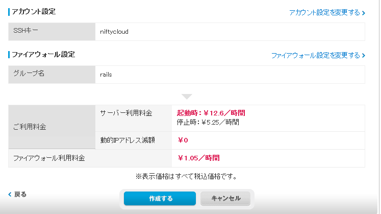 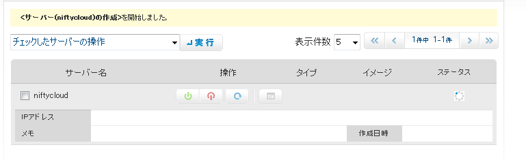